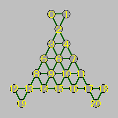
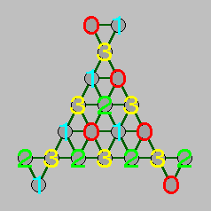

「変形三角盤」解法プログラムの高速化に挑戦した結果を公開します。いままでは、コーナーにあるペグだけに注目していました。ところが、実際にコーナーペグを動かす場合、たとえば左図の 0 番と 1 番のペグを動かすのであれば、2 番の位置に跳び越すペグが必要になります。
この位置にペグがない場合、そこにペグを移動してから、コーナーペグを動かすことになります。つまり、それだけペグを移動する回数が増えることになるわけです。これを枝刈りとして利用することができます。
ただし、この枝刈りは少々難しいところがあるのです。コーナーペグの移動に必要な最低手数は、単純に考えると次の表のようになります。
| 2番 | 1番 | 0番 | 手数 |
|---|---|---|---|
| 0 | 0 | 0 | 0 |
| 0 | 0 | 1 | 2 |
| 0 | 1 | 0 | 2 |
| 0 | 1 | 1 | 4 |
| 1 | 0 | 0 | 0 |
| 1 | 0 | 1 | 1 |
| 1 | 1 | 0 | 1 |
| 1 | 1 | 1 | 3 |
8 通りのパターンが考えられます。実は、連続跳びが絡んでくると、この表を単純に使うこができないのです。たとえば、0, 1 番のコーナーにペグがあり、2 番のペグが 5 番へ移動することを考えましょう。すると、最低手数は 3 手から 4 手へ増えることになります。ここで、枝刈りされることもあるはずです。
ところが、2 番、5 番、7 番、2 番という連続跳びにより、元の位置に戻ることもあります。すると、最低手数は 3 手に戻りますね。連続跳びは 1 手としてカウントするので、5 番の位置に移動した時点で枝刈りが行われると、条件を満たす手順までも枝刈りしてしまう恐れがあるのです。
そこで、連続跳びが終了した時点でチェックを行うことにしました。プログラムは次のようになります。
リスト：手順の探索
void search_move( int n, int jc )
{
if( n == MAX_JUMP && board[6] != NULL ){
count++;
print_move();
} else {
DNODE *peg = header;
while( (peg = peg->next) != header ){
int from = peg->postion;
int del, to, i = 0;
while( (del = jump_table[from][i++]) > 0 ){
to = jump_table[from][i++];
if( board[del] && !board[to] ){
int new_jc, lower_value;
if( move[n-1][1] == from ){
new_jc = jc;
lower_value = jc + corner_rest;
} else {
new_jc = jc + 1;
lower_value = jc + get_lower_value();
}
if( lower_value <= jump_limit && new_jc <= jump_limit ){
DNODE* r_peg = move_piece( n, from, del, to );
search_move( n + 1, new_jc );
back_piece( from, del, to, r_peg );
}
}
}
}
}
}
連続跳びのときはコーナーペグの数をチェックし、連続跳びが終了したら関数 get_lower_value で表から下限値を求めてチェックします。結果は次のようになりました。
旧版 探索ノード数 28,215,836 個 時間 66.4 [s] 改良版(1) 探索ノード数 1,862,030 個 時間 14.0 [s]
探索ノード数は 1 / 15 に減りましたが、まだまだ多いですね。そこで、コーナーペグが着地する地点、たとえば 0, 1 番のペグが着地する 4, 3 番の場所を考慮する方法もあるのですが、そんなことをしなくても効率の良い枝刈りを考えた方がいます。
deepgreen さんが考案された枝刈りは、移動に必要な回数を must と need に分けて管理することで、探索ノード数を 1,083,994 回まで減らしています。いやー、素晴らしい方法ですね。deepgreen さんには脱帽です。興味のある方は ゲストブック (NO.103) をご覧くださいませ。
このほかに、ペグをグループに分けることで枝刈りを行うことができます。ペグは移動できる場所が決まっていて、下図 (右) のようなグループに分けることができます。

たとえば、0 番のペグは 4, 9, 11, 20 番にしか移動することができません。逆にいえば、この場所にあるペグは、これ以外の場所へ移動することはできません。つまり、これをひとつのグループとして考えることができるのです。これをグループ 0 としましょう。同じようにペグが移動する場所によって、右図のように 4 つのグループに分けることができます。ペグは移動してもグループは変わらないし、跳び越すペグは必ず他グループのペグになります。
ここで、グループ 2 に注目してください。このグループのペグは、最後には 6 番にひとつだけ必要になります。すなわち、このグループのペグの個数が 0 になると、パズルを解くことができないわけです。この枝刈りは簡単に実現できますね。
もうひとつ、グループ 3 とコーナーペグの個数に注目してください。コーナーペグの移動にはグループ 3 のペグが必要ですが、コーナーペグの数は 6 つ、グループ 3 のペグの数も 6 つですから、同じ個数しかありません。つまり、コーナー以外のペグがグループ 3 のペグを跳び越すと、コーナーペグの移動ができなくなるのです。したがって、3, 4, 8, 11, 14, 16 番のペグは、グループ 3 のペグを跳び越すことはできません。グループ 3 のペグを跳び越すことができるのは、コーナーペグだけなのです。この枝刈りは跳び先表を変更することで実現できます。
それでは、この 2 つの枝刈りを実装しましょう。ペグを表す構造体 DNODE にメンバ変数 group を追加して、ペグのグループを表すことにします。グループ内のペグの個数はグローバル変数 group_count で管理し、ペグを跳び越したら減らして、バックトラックのときには元に戻せばいいでしょう。変更は簡単なので、詳細は プログラムリスト をご覧ください。これらの枝刈りを改良版 (1) に追加したところ、実行結果は次のようになりました。
旧版 探索ノード数 28,215,836 個 時間 66.4 [s] 改良版(1) 探索ノード数 1,862,030 個 時間 14.0 [s] 改良版(2) 探索ノード数 1,320,436 個 時間 8.8 [s]
それなりの効果はありましたが、下限値限定法による枝刈りには及ばないようです。deepgreen さんの方法に追加すれば、ちょっとだけ速くなるかもしれませんね。
/*
* triangle.c : 変形三角版の解法（改良版）
*
* Copyright (C) 2000 Makoto Hiroi
*/
#include <stdio.h>
#include <stdlib.h>
#include <time.h>
#define TRUE 1
#define FALSE 0
#define SIZE 21
#define MAX_JUMP 19
/* 双方向リスト */
typedef struct dnode {
int postion;
int group;
struct dnode *prev;
struct dnode *next;
} DNODE;
/* 双方向リストヘッダ */
DNODE *header;
/* 盤面 */
DNODE *board[SIZE]; /* NULL：ペグ無し */
/* ペグのグループ分け */
int group_number[SIZE] = {
0, 1,
3,
1, 0,
3, 2, 3,
1, 0, 1, 0,
2, 3, 2, 3, 2, 3, 2,
1, 0,
};
/* グループペグの個数 */
int group_count[4] = {
5, 5, 4, 6,
};
/* 跳び表 */
const char jump_table[][SIZE] = {
{ 2, 4, -1}, /* 0 */
{ 2, 3, -1}, /* 1 */
{ 3, 5, 4, 7, -1}, /* 2 */
{ 6, 10, -1}, /* 3 */
{ 6, 9, -1}, /* 4 */
{ 3, 2, 6, 7, 8, 13, 9, 15, -1}, /* 5 */
{ 9, 14, 10, 16, -1}, /* 6 */
{ 4, 2, 6, 5, 10, 15, 11, 17, -1}, /* 7 */
{ 9, 10, -1}, /* 8 */
{ 6, 4, 10, 11, -1}, /* 9 */
{ 6, 3, 9, 8, -1}, /* 10 */
{10, 9, -1}, /* 11 */
{13, 14, -1}, /* 12 */
{ 8, 5, 14, 15, -1}, /* 13 */
{ 9, 6, -1}, /* 14 */
{ 9, 5, 10, 7, 14, 13, 16, 17, -1}, /* 15 */
{10, 6, -1}, /* 16 */
{11, 7, 16, 15, -1}, /* 17 */
{17, 16, -1}, /* 18 */
{13, 8, -1}, /* 19 */
{17, 11, -1}, /* 20 */
};
/* corner */
const char corner[SIZE] = {
1,1,0,0,0,0,0,
0,0,0,0,0,1,0,
0,0,0,0,1,1,1,
};
int corner_rest = 6;
/* 跳び手順を格納 */
char move[MAX_JUMP][2];
/* 解の総数をカウント */
int count = 0;
/* 探索する手数 */
int jump_limit;
/* 生成した状態数 */
int node_count = 0;
/*
コーナーペグは２の位置にペグがないと跳び越せない
2 1 0
0 0 0 : 0
0 0 1 : 2
0 1 0 : 2
0 1 1 : 4
1 0 0 : 0
1 0 1 : 1
1 1 0 : 1
1 1 1 : 3
*/
const int corner_jump[8] = {
0, 2, 2, 4, 0, 1, 1, 3,
};
/* 下限値を求める */
int get_lower_value( void )
{
int c = 0;
int i = 0;
if( board[0] != NULL ) i |= 1;
if( board[1] != NULL ) i |= 2;
if( board[2] != NULL ) i |= 4;
c += corner_jump[i];
i = 0;
if( board[12] != NULL ) i |= 1;
if( board[19] != NULL ) i |= 2;
if( board[13] != NULL ) i |= 4;
c += corner_jump[i];
i = 0;
if( board[18] != NULL ) i |= 1;
if( board[20] != NULL ) i |= 2;
if( board[17] != NULL ) i |= 4;
c += corner_jump[i];
return c;
}
/* 双方向リストのメモリ取得 */
DNODE *get_dnode( void )
{
DNODE *node = malloc( sizeof( DNODE ) );
if( node == NULL ){
fprintf( stderr, "Out of Memory\n" ); exit( 1 );
}
return node;
}
/* 初期化 */
void init_peg( void )
{
int i;
/* ヘッダセット */
header = get_dnode();
header->postion = SIZE; /* 範囲外のデータをセット */
header->next = header; /* 自分だけの循環リストを作る */
header->prev = header;
/* ペグデータセット */
for( i = 0; i < SIZE; i++ ){
DNODE *node;
if( i == 6 ){
board[i] = NULL;
continue;
}
node = get_dnode();
node->postion = i;
node->group = group_number[i];
node->prev = header->prev;
node->next = header;
header->prev->next = node;
header->prev = node;
board[i] = node;
}
}
/* ペグを動かす */
DNODE *move_piece( int n, int from, int del, int to )
{
DNODE *j_peg = board[from];
DNODE *r_peg = board[del];
node_count++; /* debug */
board[from] = NULL;
board[del] = NULL;
board[to] = j_peg;
move[n][0] = from;
move[n][1] = to;
j_peg->postion = to;
/* 双方向リストから削除 */
r_peg->prev->next = r_peg->next;
r_peg->next->prev = r_peg->prev;
/* グループの個数を更新 */
group_count[r_peg->group]--;
/* corner check (corner は from か to しかない)*/
if( corner[from] ){
corner_rest--;
} else if( corner[to] ){
corner_rest++;
}
return r_peg;
}
/* ペグを元に戻す */
void back_piece( int from, int del, int to, DNODE* r_peg )
{
DNODE* j_peg = board[to];
j_peg->postion = from;
board[from] = j_peg;
board[del] = r_peg;
board[to] = NULL;
/* 双方向リストへ戻す */
r_peg->prev->next = r_peg;
r_peg->next->prev = r_peg;
/* グループの個数を更新 */
group_count[r_peg->group]++;
/* corner check (corner は from か to しかない)*/
if( corner[from] ){
corner_rest++;
} else if( corner[to] ){
corner_rest--;
}
}
/* 手順を表示 */
void print_move( void )
{
int i, j;
for( i = 0, j = 1; i < MAX_JUMP; i++, j++ ){
printf("(%2d,%2d", move[i][0], move[i][1] );
for( ; j < MAX_JUMP; i++, j++ ){
if( move[i][1] != move[j][0] ) break;
printf(",%2d", move[j][1] );
}
printf(")");
}
printf("\n");
}
/* 手順の探索 */
void search_move( int n, int jc )
{
if( !group_count[2] ) return;
if( n == MAX_JUMP && board[6] != NULL ){
count++;
print_move();
} else {
DNODE *peg = header;
while( (peg = peg->next) != header ){
int from = peg->postion;
int del, to, i = 0;
while( (del = jump_table[from][i++]) > 0 ){
to = jump_table[from][i++];
if( board[del] && !board[to] ){
/* 跳び越せる */
int new_jc, lower_value;
if( move[n-1][1] == from ){
new_jc = jc;
lower_value = jc + corner_rest;
} else {
new_jc = jc + 1;
lower_value = jc + get_lower_value();
}
if( lower_value <= jump_limit && new_jc <= jump_limit ){
DNODE* r_peg = move_piece( n, from, del, to );
search_move( n + 1, new_jc );
back_piece( from, del, to, r_peg );
}
}
}
}
}
}
int main()
{
int move, start, end;
start = clock();
/* 双方向リストの初期化 */
init_peg();
move_piece( 0, 14, 9, 6 ); /* 14 からスタート */
for( move = 10; move <= MAX_JUMP; move++ ){
printf("・・・手数 %d を探索中・・・\n", move );
jump_limit = move;
search_move( 1, 1 );
if( count ) break;
}
end = clock();
fprintf( stdout, "総数 %d 個, 時間 %d\n", count, end - start );
fprintf( stdout, "生成したノード総数 %d 個\n", node_count );
return 0;
}